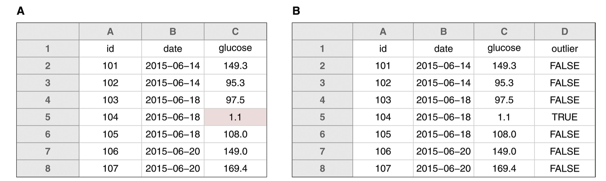

Principles for Organization
Practices
What Folders Do I Need?
hye/
├── grants/
├── presentations_and_travel/
├── projects/
├── teaching/
├── vitae/
└── websites/Inside a Project Folder
project/
├── data/
├── figures/
├── output/
├── paper/
├── R/
└── README.mdA Project README
Summary
Principles
Examples (NOT SO GOOD)
Drake's FILES with spaces and punctuation.xlsx
01.R
figure 1.png
fig 2.png
report-final FINAL HY-comments ver3.docxExamples (GOOD)
drake_learned_about_underscores.xlsx
01_import-data.R
fig01_scatterplot_length-vs-interest.png
fig02_histogram_talk-attendance.png
report-on-DEC1_2020-06-01_HY-comments.docxMachine-Readable
'_' between metadata groups'-' between words within groupsHuman-Readable
load-data.R, mtcars_measurements.csv
Using Default Ordering
01_load-data.R, 02_process-data.R
YYYY-MM-DD format (when files are sorted alphabetically, this format makes the order chronological, too!)Example
siteA_2020-04-01_animal-count.xls
siteA_2020-05-01_animal-count.xls
siteB_2020-04-01_animal-count.xls
siteB_2020-04-01_weather.dat
siteB_2020-05-01_animal-count.xls
siteB_2020-05-01_weather.datSummary
Principles
Tidy Data
Common issues
Column Labels are Values
| name | Thin Mints | Samoas | Tagalongs |
|---|---|---|---|
| A | 4 | 0 | 0 |
| B | 2 | 0 | 2 |
| c | 0 | 3 | 1 |
Column Labels Fixed
| name | flavor | boxes |
|---|---|---|
| A | Thin Mints | 4 |
| B | Thin Mints | 2 |
| B | Tagalongs | 2 |
| C | Samoas | 3 |
| C | Tagalongs | 1 |
Multiple Observational Units
| name | address | flavor | boxes |
|---|---|---|---|
| A | 3828 Piermont Dr | Thin Mints | 4 |
| B | 221B Baker St | Thin Mints | 2 |
| B | 221B Baker St | Tagalongs | 2 |
| C | 124 Conch St | Samoas | 3 |
| C | 124 Conch St | Tagalongs | 1 |
Fixed Tables
| name | flavor | boxes |
|---|---|---|
| A | Thin Mints | 4 |
| B | Thin Mints | 2 |
| B | Tagalongs | 2 |
| C | Samoas | 3 |
| C | Tagalongs | 1 |
| name | address |
|---|---|
| A | 3828 Piermont Dr |
| B | 221B Baker St |
| C | 124 Conch St |
Spreadsheet Formatting
'NA' for missing data
'NA' for certain types of data (e.g. country code for “Namibia”)Spreadsheet Example 
Raw Data
Data Dictionary
Example Data Dictionary
| name | plot_name | group | description | type |
|---|---|---|---|---|
| mouse | Mouse | demographic | Animal identifier | text |
| sex | Sex | demographic | Male (M) or Female (F) | factor |
| sac_date | Date of sac | demographic | Date mouse was sacrificed | date |
| partial_inflation | Partial inflation | clinical | Indicates if mouse showed partial pancreatic inflation | logical |
| coat_color | Coat color | demographic | Coat color, by visual inspection | factor |
| crumblers | Crumblers | clinical | Indicates if mouse stored food in their bedding | logical |
| diet_days | Days on diet | clinical | Number of days on high-fat diet | numeric |
(modified from Figure 9 of Broman & Woo “Data Organization in Spreadsheets”)